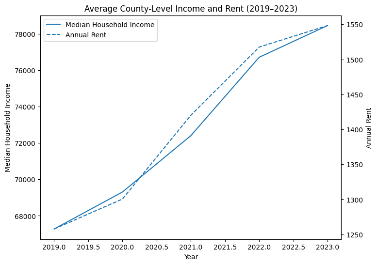

Projects

Post-COVID Rent Trends Analysis
Analyzed U.S. county-level rent trends before and after COVID-19 by combining Zillow rental data with Census income data. Built a reproducible data-wrangling pipeline, aligned multi-source time series, and examined post-pandemic housing affordability using trend and ratio analysis.

SQL Data ETL
Extracts, transforms, and prepares customer data for repeatable reporting using SQL.
View DetailsPortfolio Project (In Progress)
A larger, job-focused project currently in development as part of my final WGU coursework.
Ask Me About It